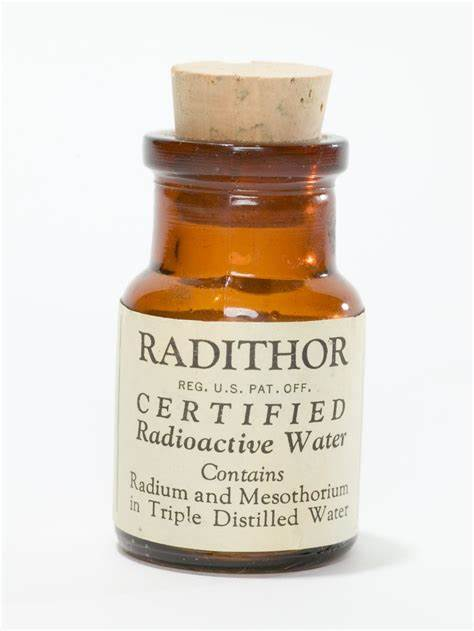
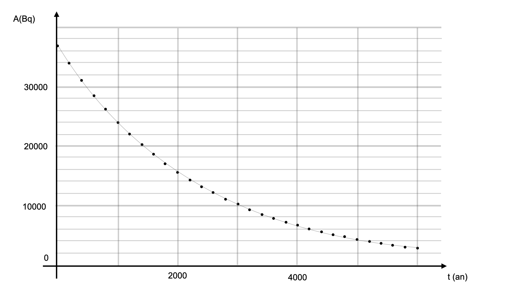

De tous temps, certaines substances sont considérées comme des remèdes contre tous les maux, des panacées.
Au début du siècle, le Radithor, sorte de "potion magique" était
censé soigner plus d’une centaine de maladies.
Un cancérologue américain a trouvé chez un antiquaire, plusieurs
bouteilles de Radithor. Bien que vidées depuis 10 ans de leur contenu,
les bouteilles se sont avérées être encore dangereusement radioactives.
Chacune avait vraisemblablement contenu environ un microcurie de radium
226 et de radium 228
1 microcurie correspond à 3,7E4 Bq.

| Noyau | Radium 226 | Radium 228 | Actinium 228 | Radon 222 | Hélium 4 |
|---|---|---|---|---|---|
| Symbole |
| Noyau | Radium 226 | Radon 222 | Hélium 4 |
|---|---|---|---|
| Masse en \(u\) | 225.9970 | 221.9703 | 4.0015 |
Unité de masse atomique : \(\SI{1}{u}=\SI{1,66054E-27}{kg}\)
Célérité de la lumière dans le vide : \(c=\SI{3,00E8}{\meter\per\second}\)
Constante d’Avogadro : \(N_A=\SI{6,02E23}{\per\mole}\)
Masse molaire du : \(M=\SI{226}{\gram\per\mole}\)
Sur l’étiquette du flacon de Radithor est mentionnée la présence de mésothorium, ancienne dénomination du radium 228. Cette "eau certifiée radioactive" contenait également du radium 226.
Les noyaux de radium 228 et de radium 226 sont des isotopes. Expliquer.
Le radium 228 se désintègre pour donner l’isotope 228 de l’actinium et une particule notée . \[\ce{^228_88Ra -> ^228_89Ac + ^A_Z X}\] Compléter l’équation de désintégration en citant les lois utilisées puis identifier . De quel type de radioactivité s’agit-il ?
Dans la suite de l’exercice, on néglige la présence de radium 228
dans le Radithor.
On suppose que l’activité radioactive du flacon est uniquement due à la
présence de l’isotope 226 du radium. Celui-ci se désintègre spontanément
selon l’équation suivante : \[\ce{^226_88Ra
-> ^222_86Ac + ^4_2He}\]
L’activité A(t) d’un échantillon de noyaux de radium 226 suit la loi de décroissance exponentielle \(A(t)=A_0\cdot e^{-\lambda \cdot t}\), avec \(A_0\) l’activité à \(t=\SI{0}{s}\).
Rappeler la définition de la demi-vie \(t_{1/2}\) d’un échantillon radioactif.
Vérifier sur la courbe donnant l’évolution de l’activité de l’échantillon en fonction du temps représentée dans le Figure 1, que la demi-vie du radium 226 est égale à 1,60E3 ans.
Établir la relation entre la demi-vie et la constante radioactive \(\lambda\) puis calculer la valeur de \(\lambda\) en s.
Donner la relation liant l’activité \(A(t)\) d’un échantillon radioactif au nombre \(N(t)\) de noyaux radioactifs présents.
Calculer \(N_0\), le nombre de noyaux de radium 226 initialement présents dans le flacon de Radithor.
Vérifier que le flacon contenait alors une masse \(m_0 = \SI{1,0}{\micro\gram}\) de radium 226.
